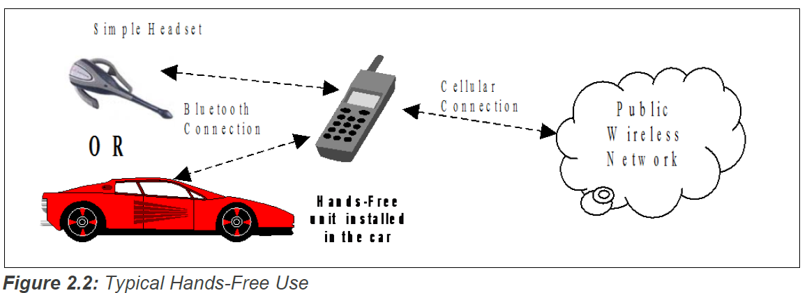

Profile Overview¶
Protocol Stack¶

The Baseband, LMP and L2CAP are the OSI layer 1 and 2 Bluetooth protocols. RFCOMM is the Bluetooth serial port emulation entity. SDP is the Bluetooth Service Discovery Protocol.
Hands-Free control is the entity responsible for Hands-Free unit specific control signaling; this signaling is AT command based.
Although not shown in the model above, it is assumed by this profile that Hands-Free Control has access to some lower layer procedures (for example, Synchronous Connection establishment).
Configuration and Roles¶
The following roles are defined for this profile:
Audio Gateway (AG)
This is the device that is the gateway of the audio, both for input and output. Typical devices acting as Audio Gateways are cellular phones.
Hands-Free unit (HF)
This is the device acting as the Audio Gateway’s remote audio input and output mechanism. It also provides some remote control means.
User Requirements and Scenarios¶
The following rules apply to this profile:
- The profile states the mandatory and optional features when the “Hands-Free Profile” is active in the Audio Gateway and the Hands-Free unit.
- The profile mandates the usage of
CVSDfor transmission of audio (over the Bluetooth link). The resulting audio is monophonic, with a quality that, under normal circumstances, does not have perceived audio degradation. - Between the Hands-Free unit and the Audio Gateway, only one Audio Connection per Service Level Connection at a time is supported.
- Both the Audio Gateway and the Hands-Free unit may initiate Audio Connection establishment and release. Valid speech data shall exist on the Synchronous Connection in both directions after the Audio Connection is established. Since it is only the AG that knows if wide band speech should be used, it should always be the AG that establishes the Synchronous Connection with the required codec.
- Whenever an “Audio Connection” exists, a related “Service Level Connection” shall also exist.
- The presence of a “Service Level Connection” shall not imply that an “Audio Connection” exists. Releasing a “Service Level Connection” shall also release any existing “Audio Connection” related to it.